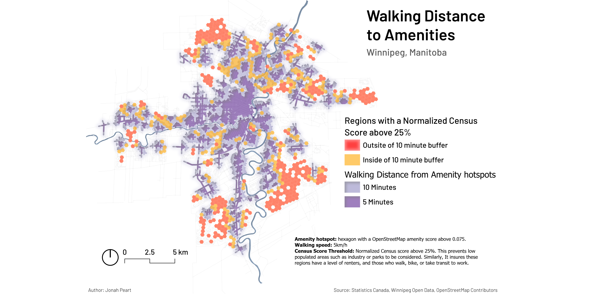
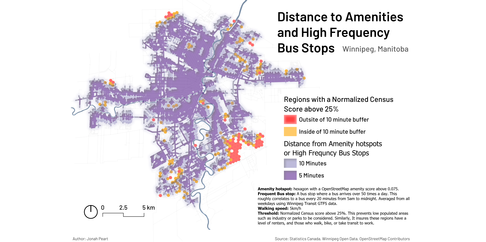
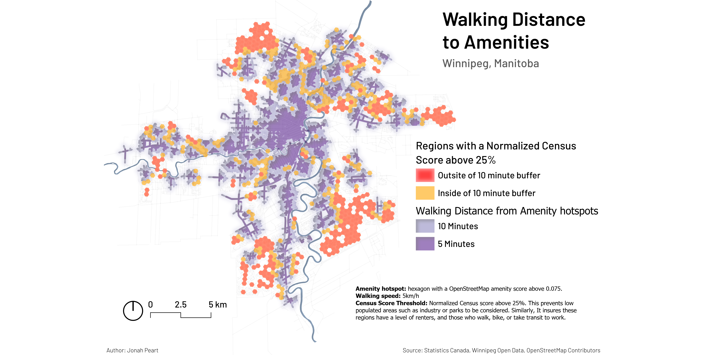
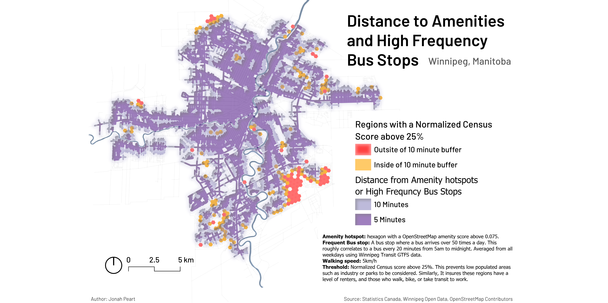
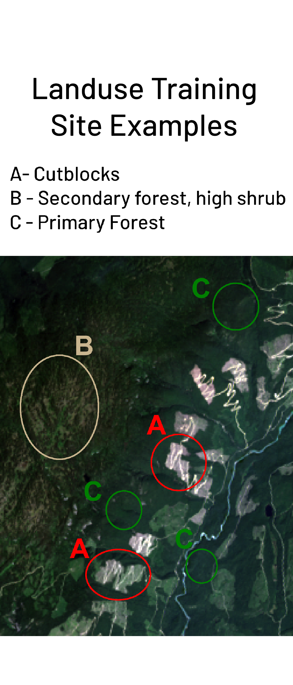
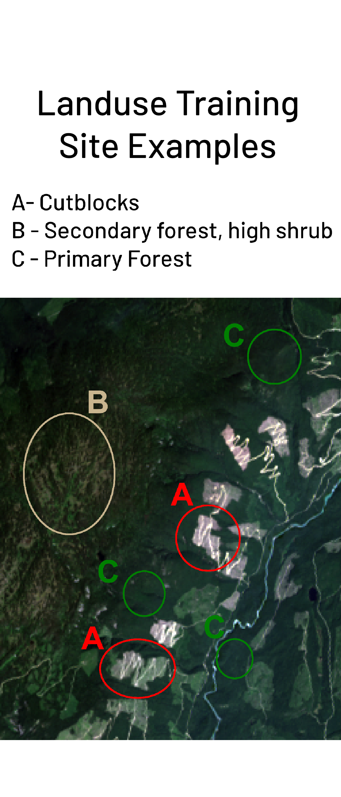

Hi, I'm Jonah! I love maps and working with spatial data.
About Me
I’ve been fixated with maps ever since I was a baby. That isn't an exaggeration,
in fact one of my first gifts as a kid was an atlas. Born and raised in
Saskatchewan Canada, I always wanted to travel and see the world, the cities,
culture, and geography. I suppose I did this vicariously through maps.
I moved to Montreal to study GIS. From here I found a new interest,
data. Visualizing data spatially is a great way to explain, learn, and infer
many things about our world. I graduated from Concordia University in May of 2025
with a Certificate in Geospatial Technologies. Aside from GIS, I am interested in
music and the environment , which I have incorporated into maps (of course).
I use many different softwares and libraries to accomplish a diverse amount of GIS,
remote sensing, and database related tasks. I am constantly learning new environments to improve my skills!


QGIS
ArcGISpro
Python
Geopandas
Pandas
PostgreSQL
Leaflet
R
OpenStreetMap
Mapbox
TerrSet
Javascript
HTML
CSS
Matplotlib
QGIS
ArcGISpro
Python
Geopandas
Pandas
PostgreSQL
Leaflet
R
OpenStreetMap
Mapbox
TerrSet
Javascript
HTML
CSS
Matplotlib

 





 
